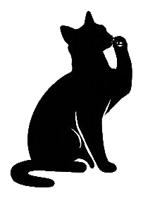
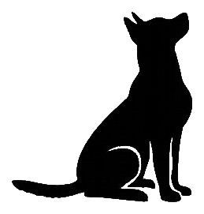
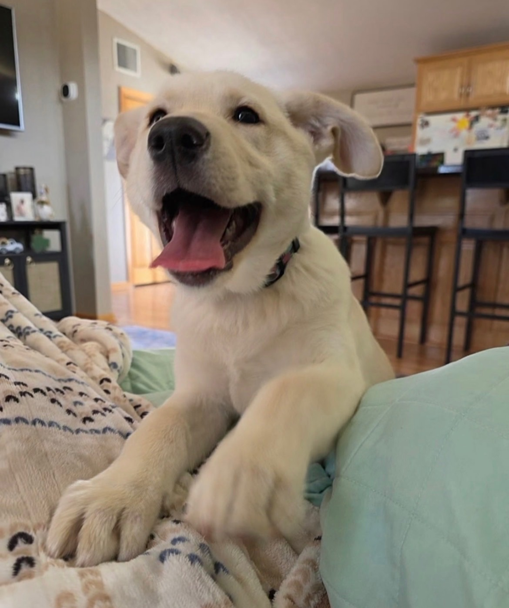
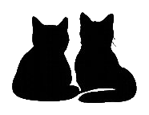
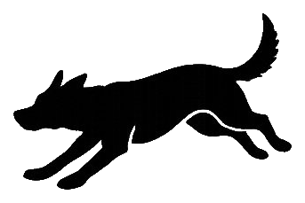
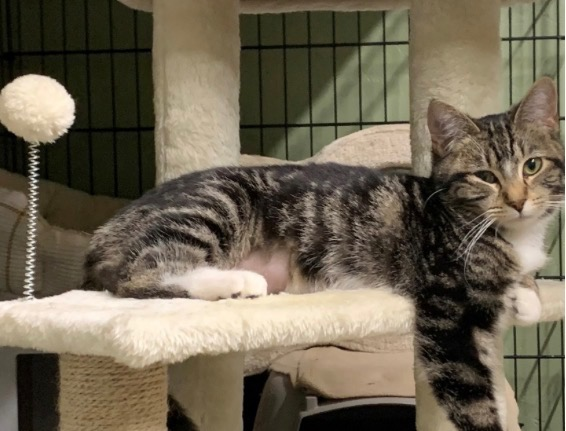

About WCAHS
The voice for those who cannot speak for themselves

Our Mission
The Waseca County Animal Humane Society is a No-Kill 501(c)(3) nonprofit composed of individuals from our community and beyond, who have come together to be the voice for those who cannot speak for themselves.
We independently serve southern Minnesota through community funding — we do not receive county support. Every dollar comes from people like you who believe every animal deserves a chance.
Rather than maintaining a traditional shelter, all our animals live in foster homes where they receive personalized attention, socialization, and love while they wait for their forever families.



Why Foster-Based?
Home Environment
Animals recover and thrive in a real home, not a kennel. Foster families provide the individual attention each animal needs.
Better Matches
Foster families know each animal's personality, quirks, and needs — so we can match you with the perfect companion.
Lower Costs
Without building overhead, more of every donated dollar goes directly to veterinary care, food, and supplies for the animals.


Our Programs
Pets for Seniors
Qualifying senior adopters receive 50% off adoption fees. We believe companionship is essential at every age, and no one should miss out because of cost. Contact us to learn about eligibility.
Barn Cat Program
Spayed/neutered, vaccinated cats available to farm families for a donation. These cats may not be suited for indoor life but thrive with a purpose — keeping barns and farms free of mice while enjoying outdoor living.
Foster Program
We're always looking for foster families. You provide the love and a safe space — we cover food, supplies, and vet care. Fostering saves lives and helps animals become their best selves before adoption.
Resources
Fostering FAQ
Everything you need to know about becoming a foster family.
I Found a Stray
Steps to take if you've found a stray animal in Waseca County.
Lost Dogs MN
Statewide lost dog reporting and search network.
SE-MN Lost/Found Pets
Regional Facebook group for lost and found animals.
